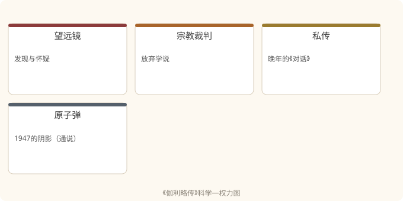

伽利略传
一、基本信息
| 作者 | 布莱希特 |
|---|---|
| 成书/出版 | 1939年（作者页 B138 口径：伽利略传（1939）） Bertolt Brecht — Encyclopaedia Britannica（百科全书） |
| 国别/地区 | 德国 |
| 时代 | 现当代 · 20世纪 |
| 体裁 | 历史剧 |
| 语言 | 德语 |

《伽利略传》科学—权力图（主题·结构图）
二、创作背景
作者页（B138）：布莱希特 major_works 载'伽利略传（1939）'（B138 作者页定位，详见 sanfenqian 条核对）。
题材（通说待核）：伽利略的发现、放弃与'悔罪'——科学家的道德困境。
三、内容脉络
望远镜的发现→宗教裁判→放弃学说→晚年'《对话》'私传（通说待核）。
'不自由的研究'与安德烈亚的继承（通说待核）。
四、主要人物表
| 人物 | 身份 | 说明 |
|---|---|---|
| 伽利略 | 物理学家 | 放弃与反思（通说待核） |
| 安德烈亚 | 学生 | 继承者（通说待核） |
五、主题与艺术特点
- 科学与权力（通说）。
- '真理'的传播责任（通说待核）。
- 原子弹的阴影（1947美国版增补——通说待核）。
六、影响与评论
- 作者页：布莱希特历史剧（B138 作者页口径）。
Bertolt Brecht — Encyclopaedia Britannica（百科全书） - 三个版本（1938/1945/1955——通说待核）。
Bertolt Brecht — Encyclopaedia Britannica（百科全书）
七、阅读建议
难点
- 伽利略史实与虚构。
- '间离'的历史剧处理。
- 《伽利略传》（人民文学出版社丁扬忠译本，通说待核）。
- 德文原版（Suhrkamp）。
对照《四川好人》《高加索灰阑记》。
八、待核实
- 1939年流亡丹麦版核对。
- 1947年美国版与广岛增补待核。
- 伽利略'悔罪'台词待核。
本页主要来源
布莱希特的其他收录作品：三分钱歌剧